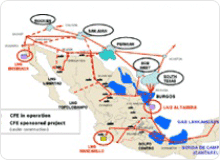
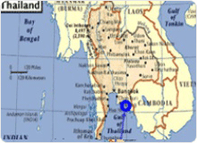
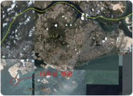
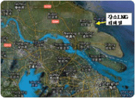
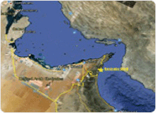

- What we do
- Overseas LNG Re-gasification Terminal Project
Overseas LNG Re-gasification Terminal Project
KOGAS ,as a state-owned company, has been focusing mainly on LNG import and distribution of natural gas in Korea. However with the increasing global trend of acquiring energy related assets and integrating horizontally, KOGAS has taken a new path of seeking chances to participate in the development of international downstream projects including LNG re-gasification terminal, pipeline network and retail markets, as well as upstream businesses. KOGAS has a keen interest in participating in an equity ownership of LNG re-gasification terminal projects and providing various technical services which include feasibility study, FEED, tank engineering, supervision, commissioning, training and so on.
BENEFITS FROM KOGAS’ SERVICES
When comparing our capabilities and proposed services to that of other competitors, the benefits of choosing KOGAS are summarized as follows:
- Reliable service based on its wealth of experience gained from extensive operation and maintenance of LNG import terminals for a quarter of a century
- In-depth service derived from all self-performing activities from feasibility study and FEED to commercial operation of LNG import terminals
- Consistent service from FEED to commercial operation
- Proven methodologies which have been applied successfully in other projects
- Reasonable, applicable and proactive actions achieving project objectives in timely manner
COMPETITIVE ADVANTAGE
The following are competitive advantages which clearly distinguish KOGAS from any other providers:
Company Recognition
- The world’s largest LNG importer
- The world’s largest LNG import terminal operator
- One of the world’s most admired company, ranked 4th in the energy sector by Fortune Survey in Mar. 2011
Expertise & Technology
- O&M experience for 25 years
- Highly knowledgeable workforce
- Over 2,000 engineers
- High-level standards
- Over 200 various in-house technology standards for design, construction and O&M of an LNG import terminal
PROJECTS
KOGAS is conducting the Manzanillo LNG Re-gasification Terminal Project including investment and Terminal O&M, and has implemented several Technical Services (Commissioning, Training, and Technical Consulting including FEED) and has been implementing Technical Services in Thailand, Singapore and China and so on.
-

Manzanillo LNG Re-gasification Terminal Project (Mexico)
- Project Name : Mexico Manzanillo LNG Re-gasification Terminal
- Location : Manzanillo City of Colima State,
800km west of Mexico City, 300km southwest of Guadalajara - Client : CFE(Comision Federal de Electricidad)
- Project Type : BOO(Build-Own-Operate)
- Sponsor : KOGAS(25%),Samsung C&T(37.5%),Mitsui & Co., Ltd(37.5%)
- Terminal Size : Storage Tank 150,000㎘×2, Jetty
- Send-out Capacity : 3.8MMTPA
- Project Period : April, 2008 ~ August, 2031
- Construction : April, 2008 ~ August, 2011
- Operation : September, 2011 ~ August, 2031
- KOGAS Scope : Equity Investment, CM(Construction Management),
Terminal O&M
-

PTT LNG Re-gasification Terminal Project (Thailand)
- Project : Thailand LNG Re-gasification Terminal in Rayong
- Owner : PTT LNG Company Limited
- EPC Consortium : KOGAS, GS E&C, Daewoo Eng.
- Terminal Size : Storage Tank 160,000㎘×2, Jetty
- Send-out Capacity : 5MMTPA
- Service Period : February, 2008 ~ October, 2012
- KOGAS Scope : Storage Tank Design, Technical Consulting, Training, Commissioning
-

Singapore LNG Re-gasification Terminal Project
- Project : Singapore LNG Re-gasification Terminal in Jurong Island
- Owner : Singapore LNG Pte. Ltd.
- EPC Contractor : Samsung C&T
- Terminal Size : 180,000㎘×2, Jetty
- Send-out Capacity : 3.5MMTPA
- Service Period : March, 2010 ~ August, 2013
- KOGAS Scope : Technical Consulting, Training, Commissioning
-

Jiangsu LNG Re-gasification Terminal Project (china)
- Project : Jiangsu LNG Re-gasification Terminal in China
- Owner : PetroChina LNG Jiangsu Co.
- Terminal Size : 160,000㎘x3, 200,000㎘x1, Jetty
- Send-out Capacity : 3.5MMTPA
- Service Period : August, 2012 ~ December, 2015
- KOGAS Scope : Storage Tank Design
-

Emirates LNG Re-gasification Terminal Project
- Technical Advisory(UAE)- Project : LNG Import Terminal Project - Technical Advisory Services
- Owner : Emirates LNG LLC
- Terminal Size :
- 1st Phase - FSRU (Send-out Capacity : 4.5MMTPA)
- 2nd Phase- FSU + Onshore re-gasification facility (Send-out Capacity : 4.5MMTPA)
- Service Period : January, 2012 ~ July, 2015
- KOGAS Scope : Technical Consulting, Project Philosophies and Basis of Design Preparation, FEED & EPC Deliverables Review, Technical Audit and Site Supervision